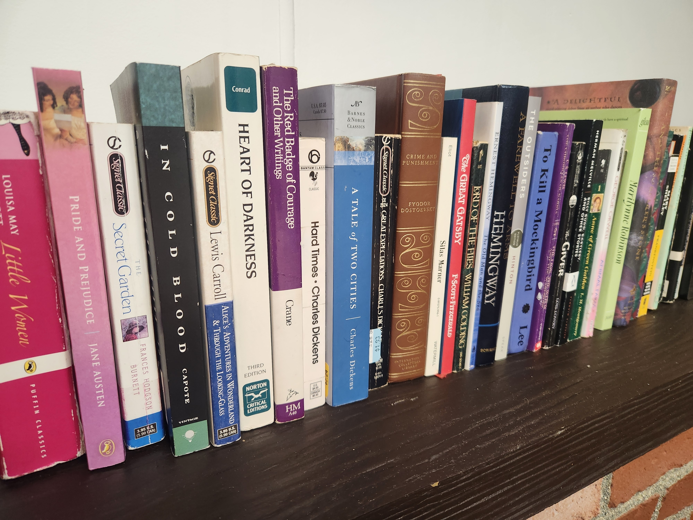
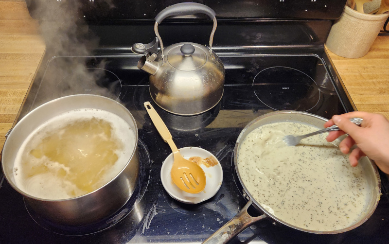
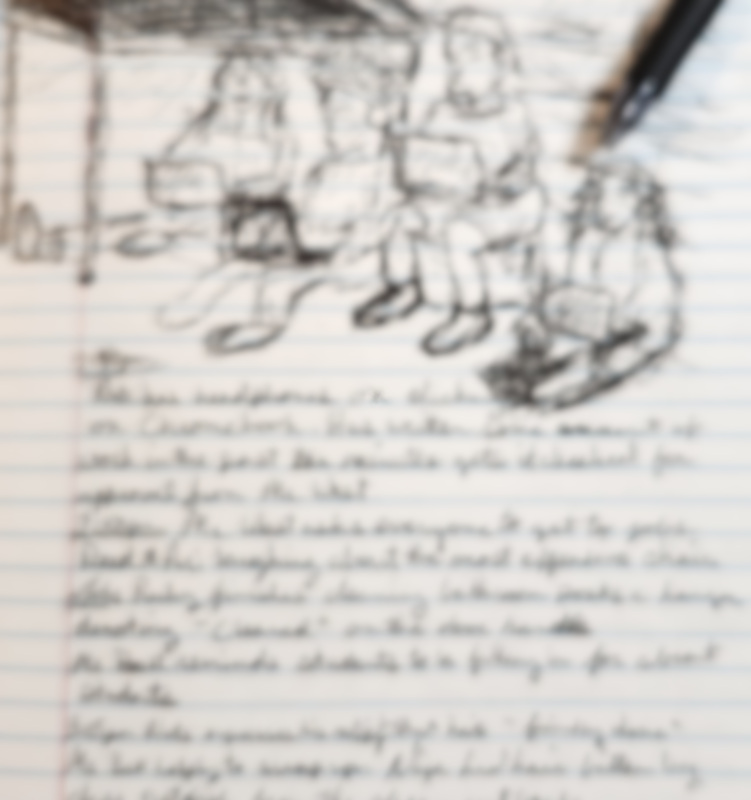

An Individual Approach to Education
Wendell Berry said that, “Education eventually comes down to a conversation between an old person and a young one.” We take the personal nature of education seriously.
Students build confidence and competence by being guided through meaningful challenges both academic and practical, whether they are wrestling with a math problem or designing an app for their interests. At Austen Clemens students have self-directed opportunities for ACT prep, internships, dual enrollment, vocational schools, or work.
High School Graduates are equipped for their future, seeing themselves as shapers and contributors of themselves, their own families and their communities.

Confidence and Competence: Not just reading, writing and arithmetic.
We see walking and cycling in Washington to go to the library, and the parks and to run other errands downtown to offer more than a bit of exercise but also an opportunity for purposeful challenge and independence, whether propelling themselves up a hill or navigating unfamiliar streets, students will be called to rise to the occasion, pay attention, and work through challenges.
The daily opportunity to overcome challenges extends to preparing meals for our community. Cooking meals is a regular part of daily life, a way to bring joy to your friends, and create something with your hands. It is real work that matters. Curiosity, observation, wonder, research, and experimentation are all cultivated in the kitchen through meaningful hands-on work. Students will encounter real food, cultivating a lifetime habit of joy in the labor of the kitchen, providing our daily needs in our community and connected to human history and culture. Humans have been setting the table and preparing food long before our recent local experiences of microwaves and pre-breaded frozen chicken patties. In the kitchen students will practice project management, face unknown obstacles, cope with failures and normalize learning from mistakes!

Curriculum
Math
Our approach to math extends beyond the unending problem sets; instead, focusing on a materialized abstraction, mastery, group work and seminars. Materials and manipulables are used where possible. Students are assessed on mastery not through single-serving high stakes assessment. Through group and individual challenges, students will develop flexibility of thinking and hone their collaboration and problem solving skills. Students use the problem solving skills learned when studying math curriculum wide.
Writing
Students meaningfully collect and imitate favorite samples of writing in order to cultivate an appreciation for words and nuance. While writing is studied and utilized throughout the curriculum, it is also explicitly practiced as its own subject matter.
Latin
We teach Latin so that students can read and enjoy ideas in another language. Students will begin reading short enjoyable stories from their first year of Latin study. Most students will be able to read texts in original Latin after 3-4 years of study. Learning a second language opens a student to more possibilities of communication and teaches them to reflect on their own language while delighting in sharing stories and understanding in Latin.
History and the Humanities
Putting before the students the noble challenges of humanity throughout history. - What is friendship?
- Courage?
- Generosity?
- Justice?
- Love?
Reading great books in the classical tradition, participarting in Socratic seminars, and wrestling with ideas to refine ourselves and shape our future.
Science
Scientific inquiry starts with experience, observation, and wonder. Students pursue study of the natural world and natural laws through their own work in the garden, kitchen, and indoor and outdoor environments. Students read living science books exploring the stories of great thinkers in history who discovered and manipulated the natural world to create and invent tools and technology to aid human life. Students will research and experiment areas of interest.
Community
We seek to be present in our community, greeting and serving our neighbors, learning from opportunities to shadow and intern at local businesses, and volunteering at the library and senior center. Continually learning what it is to be a good neighbor and upstanding citizen.
Non-Discrimination Policy
The Austen Clemens School admits students of any race, color, national and ethnic origin to all the rights, privileges, programs, and activities generally accorded or made available to students at the school. It does not discriminate on the basis of race, color, national and ethnic origin in administration of its services, educational policies, employment practices, or admissions policies.